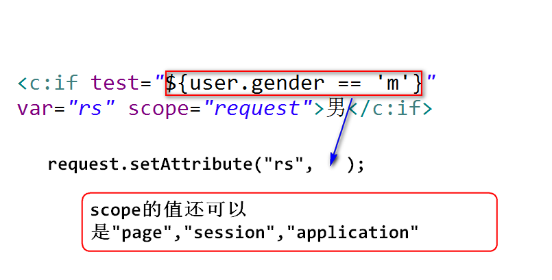

(1)jsp标签是什么?
jsp标签语法类似于html标签，用于替换jsp中的java代码。
注:
因为带有java代码的jsp不利于页面的维护(美工去修改带有
java代码的jsp很不方便),所以sun推出了jsp标签技术规范。
使用jsp标签，方便页面的维护，另外，方便代码的复用。
(2)el表达式是什么?
是一套简单的运算规则，用于给jsp标签的属性赋值。也可以脱离jsp标签，
单独使用。
(3)el表达式的使用
1)读取bean的属性 (e1.jsp)
javabean(了解):
一个类如果满足如下几个简单的条件，就可以称之为一个javabean。
public class
public 构造器
最好实现Serializable接口
有一些属性
有对应的get/set方法
方式一 ${user.username}
a.执行过程:
依次从pageContext-->request-->session-->
application查找绑订名为"user"的对象,找到该
对象之后，会调用该对象的"getUsername"方法，
然后输出。
b.优点
会将null转换成""输出。
如果找不到对应的对象，不会报空指针异常,会输出""。
c.指定查找范围
可以使用pageScope,requestScope,sessionScope,
applicationScope来指定查找范围。
比如 ${sessionScope.user.username}
方式二 ${user[‘username’]}
a. []里面可以出现绑订名。
b. []里面可以出现从０开始的下标，用于读取数组中指定
下标的元素的值。
2)做一些简单的运算 (e2.jsp)
a.算术运算:
+,-,*,/,%
注： + 只能求和！
b.关系运算:
>,<,>=,<=,==,!=
c.逻辑运算:
&&,||,!
d.empty运算:
用来判断集合是否为空，或者是不是一个空字符串。
3)读取请求参数值 (e3.jsp)
${param.name}
等价于 request.getParameter("name");
${paramValues.city}
等价于 request.getParameterValues("city");
(4)jstl (jsp standard tag lib)
1)jstl是什么?
apache开发的一套jsp标签，后来捐献给了sun,sun将其命名为jstl。
2)如何使用jstl?
step1.导入jstl相关的jar文件。
<dependency>
<groupId>jstl</groupId>
<artifactId>jstl</artifactId>
<version>1.2</version>
</dependency>
step2.使用taglib指令引入要使用的jsp标签。
<%@ taglib uri="" prefix=""%>
uri属性：指定要引入的jsp标签的命名空间。
注:
为了区分同名的元素在元素前添加的一个限定，通常是一个
域名(为了避免命名空间也冲突)。
prefix属性：命名空间的别名。
### 3)if标签
a.语法:
<c:if test="">
标签体
</c:if>
b.用法:
如果test属性值为true,容器会执行标签体。
test属性值可以使用el表达式来赋值。

4)choose标签 (choose.jsp)
a.语法:
<c:choose>
<c:when test="">
</c:when>
...
<c:otherwise>
</c:otherwise>
</c:choose>
b.用法:
when可以出现一次或者多次(相当于一个if语句),otherwise
可以出现０次或者１次(相当于最后那个else,表示例外)。
当test属性值为true时，执行标签体的内容。
5)forEach标签 (forEach.jsp)
a.语法:
<c:forEach items="" var="" varStatus="">
</c:forEach>
b.用法:
items属性用来指定要遍历的集合或者数组，该属性可以使用
el表达式来计算。
var属性用来指定绑订名。
注：
绑订范围固定是pageContext,该标签每次从集合或者数组中
取一个元素，然后将其绑订到pageContext上。
varStatus属性用来指定绑订名。
注：
绑订值是一个对象，由该标签创建，用来获得当前遍历的状态，
getIndex():用来获得当前正在被遍历的元素的下标(从０开始)
getCount():用来获得当前遍历的次数(从1开始)。
# 练习 使用el表达式输出员工对象的各个属性值
Employee类(ename,salary,age)